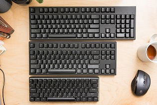
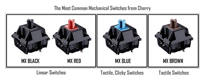
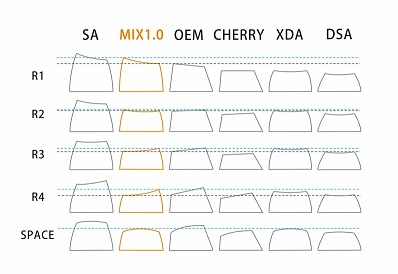

This wiki's purpose is to inform the average keyboard user about mechanical keyboards and their features including: size and layout, type of key switches, and type of keycaps.
Size & Layout
When dealing with mechanical keyboards, the size and layout depends on the user's preferences. Take your standard 100% keyboard for example. This layout features the full alphabet with a number and function row, a navigation section in the middle, and a number pad on the right.
This is the keyboard of the average user since it is the layout that is most widely available. However, not everyone has the luxury of space or the need for all those keys and that is where smaller layouts come in. Another layout is the 70% or the "tenkeyless" layout which features everything a 100% board does, just without the number pad. It doesn't stop there, some users go even smaller with 60% keyboards and even more rarely, 40%.
The 60% board removes the entire right side of the keyboard including the number pad, navigation and even gets rid of the function row so all the user is left with is the alpha characters and the modifiers. Going smaller, sacrifices must be made in order to still have the same functionality as a regular 100% keyboard and this is where layers are introduced. Layers are firmware solutions that allow the user to hold down a function button to access a key that is not physically represented on the board.
Types of Key Switches
Next is the switches. To most people (that care), the switches are the most important part of the keyboard. It reflects the boards personality in a way that can be intimidating to some people. By intimidating I mean a keyboard can have a very strong switch and someone with less than average finger strength may not be able to press the key all the way down when touch typing. Before I get too ahead of myself, let me talk about the the different types. There are 3 main types of switches: linear, tactile, and clicky. Linear switches offer a smooth transition from key press to activation. Linear simply means that the mechanism itself is linear in movement free of bumps, or tactility.
Tactile switches are still going to be smooth like linear switches but have a ridge within in the switch slider that creates a tactile bump. This feeling can be pleasant to some users because it confirms that the switch activated successfully and the keystroke registered with the machine.
Finally, clicky switches. These switches are known for their obnoxiously loud clicky sounds. These function the same as tactile switches, just with an added spring that creates the click.
Types of Keycaps
Keycaps are very important because they act as an extension of your fingers. They come in a range of different profile and can be made of different types of plastics. The types of profiles are SA, OEM Cherry, XDA, and DSA. They can be made from PBT or ABS plastic.
SA profile is more of a sculpted profile that conforms to the position of your hands when resting over the keyboard. OEM and Cherry are very similar with shape, but OEM keycaps are taller. XDA and DSA are similar as well, where all caps are a single height and shape, giving a uniform appearance.
The more enthusiastic of keyboard owners look for fancier, more expensive keysets. These nicer sets boast better build quality, attractive color ways, and rarity that enthusiasts seek out. These keysets can have a theme relating to movies or games, or simply matching colors.